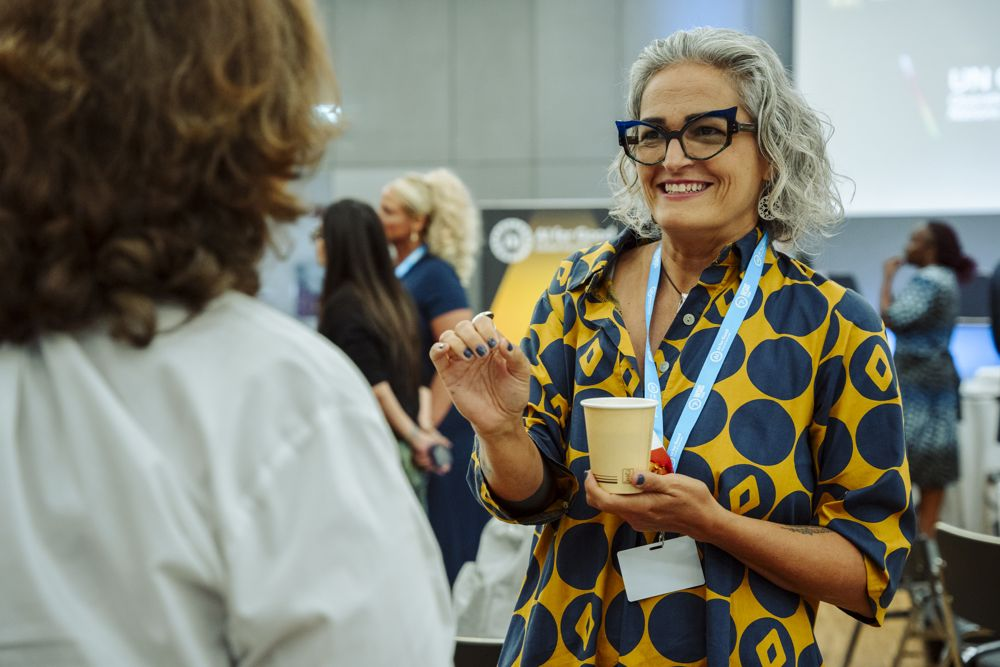
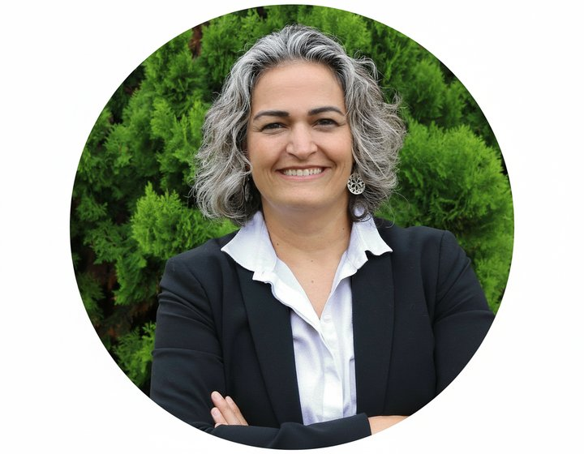

For international development & humanitarian organisations
You’re under pressure to deliver. What if the obvious answer isn’t the best one?
The priorities are clear, but budgets are being cut and progress is harder than expected. Decisions keep escalating, teams are stretched, and difficult choices lie ahead: what to protect, what to change and where to focus limited resources.
When resources are stretched, every decision matters. I work with leaders and teams to question the obvious response, explore alternatives and turn better decisions into changes that make a difference.
Five questions about how priorities translate into everyday work.
- Which results must we protect as funding shrinks?
- We approved the strategy months ago. Why does everything still run the old way?
- How do we make AI genuinely useful to our teams, beyond the pilot?
- What could we change besides the budget?
- Our results framework satisfies donors. Why doesn’t it help us decide anything?
Before deciding what to change, look beyond the obvious answer.
The Delivery Readiness Review is a focused three-week engagement that challenges assumptions, tests them against evidence and works with your team to identify what will make the greatest difference to delivery.
Three weeks. A clearer understanding of your options. Practical recommendations for what to change first.
The Monday-Morning Test
What is supporting or holding back
your delivery?
Choose a strategy or plan and answer five questions about how the work is organised. You will get a reading of the arrangements you report, how they may affect one another and what is worth examining more closely.
A first reading from your answers, not a diagnosis. No email required.
How I help
From understanding the blockage
to changes that work.

- Understand what is holding delivery back.
Examine the priority, the work required and the conditions affecting delivery.
- Develop a workable response.
Agree practical changes with the people who will put them into use.
- Put the changes into practice.
Work with your team through implementation, adjusting as we learn.
You can commission an assessment on its own, a response your team takes forward, or support through implementation.
Experience behind the work
100+ projects 20+ countries
I designed and led changes across this portfolio, working with teams to revise planned work and improve how delivery decisions were made.
Experience gained inside international organisations.
More from my track record
Results from roles inside international organisations, each with what it measures.
- A funding pipeline that grew from £6M to £22M in under twelve months. This is pipeline value, which is work identified and being pursued, and not income secured.
- 90% of staff using new AI tools within two months of their introduction, measured across the teams the rollout covered.
- Proposal drafting reduced from two weeks to two days over the same period, measured on the drafting step alone.
- A $400M portfolio brought under one results-management system across 13 independent organisations. This is the scale of the portfolio and the systems work it took, not money raised or a financial gain.

About
Hi, I'm Ale.
I have spent twenty years inside international organisations, working through the practical challenges of turning agreed priorities into work that people can actually carry forward. Give me a tangled problem and a room full of people who see it differently, and I am in my element.
I am endlessly curious and a forever-student, always learning something new and asking what we are really trying to solve. I like getting beneath the first explanation, connecting the dots and working with people to find a response that makes sense in their world.
For me, that means making change something people are part of. I want to understand how they experience the work, what they have already tried and what would help them move it forward.
Off the clock, I'm a mum, a cat person 🐱 (don't worry, I love dogs too), and happiest under water. I'm a certified Divemaster 🤿 🐠, and the ocean is where I connect my own dots.
Alessandra (Ale) Furtado · Brazilian–Portuguese, based in Europe · Portuguese (native), English & Spanish (fluent), French (intermediate) · MA International Development (Distinction), University of Westminster · PRINCE2
Meet Ale
Sailing, diving and how I work with people.
Music: “Wholesome” by Kevin MacLeod (incompetech.com) · CC BY 4.0
Photo & video: Cristina Lopes
Let’s talk
What would you like
to move forward?
We can discuss your test reading or a priority your organisation is working to deliver.
A 20-minute conversation, and you are welcome to bring your test reading.